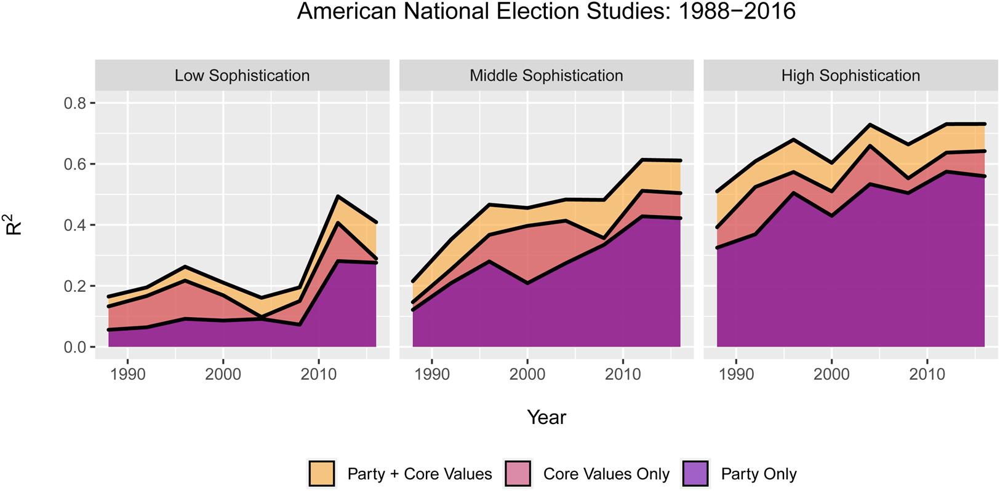
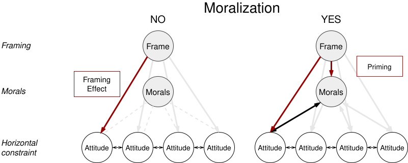
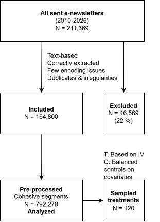
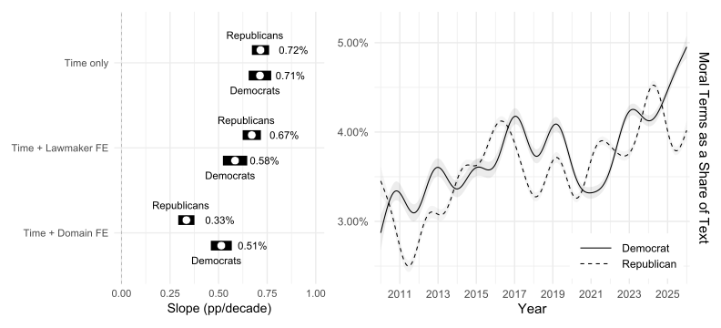
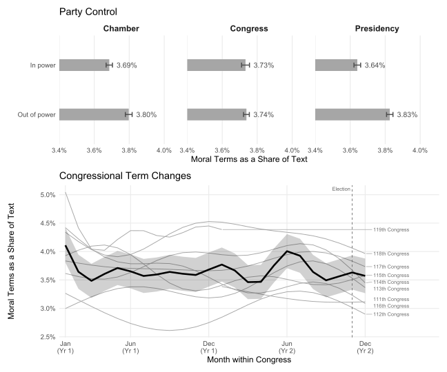
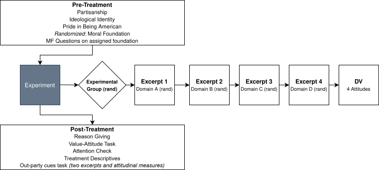
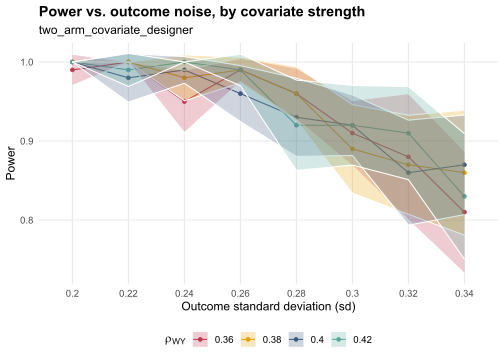

Moralized Policy Communication and Conflict Extension
Aarhus University
Same Capabilities, More Ideology
American citizens, especially partisans, increasingly organize their policy views along liberal–conservative lines (Layman and Carsey 2002; Baldassarri and Gelman 2008; Levendusky 2010b; Lupton, Myers, and Thornton 2015; Hare 2022).
Conflict Extension

Party cues explanation: elite polarization and strong divergent cues on policies → constrained belief systems, (Levendusky 2010a; Lenz 2012), party cues literature.
Yet this may not work so easily across many issues at the same time — new or technical issues in particular.
Same Capabilities, More Ideology
Values provide a basis for opinions, (Peffley and Hurwitz 1985; Vishwanath 2025), influence considerations around policy even from co-partisans (Slothuus 2010; Kraft 2018)
Moral Divide: Divide in morals not just individual policy propositions
Moralized communication emblematic of elite polarization, Simonsen and Widmann (2025), mobilization of co-partisans, Jung (2020)
Importantly: lot of leeway in connecting policies and values, Kraft and Klemmensen (2024), libs/cons share moral intutions, Blumenau and Lauderdale (2025)
Primacy of values or partisanship?
Frames, Morals and Attitudes

Hypotheses
Priming Hypothesis: Moralized communication increases attitudinal constraint across issues.
Mediation: The effect of moralized communication on attitudinal constraint is stronger when it invokes moral considerations important to the respondent.
Dissonance Hypothesis
| A. Motivated Reasoning | B. Value-anchored updating | |
|---|---|---|
| Attitude - Value | Decrease | = |
| Horizontal constraint | = | Decrease |
Methods
Research Design

Data
- E-newsletters, direct channel to constituents, unmoderated, widely used, free format (U.S. settings)
- DCInbox dataset: coordinated effort to collect all these newsletters from 2010 until now (N = 164,750; after cleaning)
- Thorough cleaning needed (code, spanish, old encodings…)
- Splitting into segments: Haiku 4.5 prompted to create segments, policy domains (N = 792,279)
- Also tried: two sentence windows, tokenized, tf–idf and splitting in places of major semantic similarity drops
Senator Jack Reed’s e-Newsletter Dear ,? I hope you and your family have are having a positive start to 2026.? As Congress kicks off the year, I wanted to share some of what I am working on this week in Rhode Island and Washington, DC.? To learn more, clickHERE ?or the image below. ??????? Jack Reed United States Senator? CONTACT WEBSITE PLEASE REPLY USING THE CONTACT LINKS ABOVE MANAGE MY SELECTIONS |
Holding this Administration Accountable and Fighting for Colorado Dear Neighbor,
This week started on a devastating and somber note with the horrific killing of Renee Good, a mother of three and American citizen who was shot multiple times by an ICE agent in Minnesota. My wife Andrea and I are both heartbroken - for Renee’s friends and family, including her young children, for the people of Minneapolis and Minnesota, and for our entire nation. Put bluntly, we cannot normalize this - and there must be accountability. For months, I’ve pushed back against the lawlessness of the Trump administration, including countless abuses by ICE and the Department of Homeland Security - and I firmly believe that Congress must utilize every tool available to do so. By way of example, as many of you may know, last year ICE blatantly obstructed congressional oversight of detention facilities - including right here in Colorado. Many skeptics suggested that Congress simply had no way to stop them. Not me. Instead, I sued ICE - and served as the LEAD plaintiff in a lawsuit against DHS, Secretary Noem and the Trump administration. And the Federal court in my lawsuit - Neguse et. al v. ICE - just two weeks ago ruled in our favor. The bottom line is that we must keep pushing for accountability and the rule of law, and that’s exactly what I intend to do.Law and Crime · ICE accountability
Services Contact Events Subscribe
We also must continue to describe clearly, and honestly, the illegal and retaliatory actions the Trump administration has perpetrated against our state. For the last several months, President Trump has waged an unlawful scheme of political retribution against Colorado - announcing plans to dismantle the National Center for Atmospheric Research, denying disaster aid for folks impacted by wildfires and flooding, freezing child care and food assistance for hungry families, and vetoing a bill that provides access to clean water for tens of thousands of people in southeastern Colorado. These actions are unconscionable and blatantly retaliatory, and we cannot allow the President to continue inflicting his personal vendetta on our communities. For the past several weeks, our team has been hard at work building coalitions in Congress and in the community to save NCAR, and to expose the administration’s unlawful actions. Yesterday, I took to the House Floor to urge my colleagues to stand up against Trump’s actions and vote to override his veto of the Finish the Arkansas Valley Conduit Act - a bill that initially passed both the House and Senate unanimously. I warned that failure to act could mean no town, no county, and no state will be safe from political retaliation by the administration.Government Operations · Trump retaliation against CO üëáüèæClick HERE or on the image below to watch. I was deeply disappointed that not enough Republicans were willing to put aside political differences and vote in support of the people of Colorado, but remain committed to taking up an all-hands-on-deck approach to combating the reckless directives targeting our state.Government Operations · Trump retaliation against CO
My hope is rooted in knowing that if we work tirelessly - and together - we can successfully push back, like we did just yesterday in forcing the Republican-controlled House to vote on extending healthcare tax credits for working families, and PASSING the bill.Health · Healthcare tax credits
Our work continues. Please continue reading for additional updates. HOUSE REPUBLICANS’ TOP PRIORITY‚ĶSHOWER-HEADS? On Tuesday, House Republicans reconvened Congress after a 23-day recess, and their first legislative priority for the New Year was . . . shower-heads. Seriously. During our Rules Committee hearing, I discussed the myriad of issues Coloradans expect Congress to tackle, rather than these ridiculous proposals. It’s time my colleagues across the aisle get serious and join Democrats in tackling real issues like making life more affordable for folks across our state.Government Operations · Legislative priorities
THE MARSHALL FIRE - FOUR YEARS LATER Last week, I had the privilege and honor of joining constituents and our brave first responders in Louisville for the fourth anniversary of the Marshall Fire. While we have made much progress, the road to recovery has been long and difficult for so many, and there is still much work to do. My team and I are committed, as always, to standing with the community and going above and beyond to assist all those impacted by that terrible fire, as we fight for serious reforms on wildfire mitigation, consumer protections and more in Congress.Constituency Service · Marshall Fire recovery Pictured left: Congressman Neguse speaks to group of constituents at Marshall Fire Anniversary event. Pictured right: Congressman Neguse speaks to a constituent at Marshall Fire Anniversary event.
WHAT ELSE HAVE WE BEEN WORKING ON? üá∫üá≤ As I said during Trump’s second impeachment trial, for centuries we accepted the peaceful transfer of power as fact. Five years ago, that all changed, when our Capitol - and our republic - were attacked. Let us never forget the brave law enforcement officers who put their lives on the line to defend our democracy.Commemoration · Capitol attack
üèÖNominations Requested! The Gloria T. Tanner Congressional Award for Outstanding Community Service is awarded annually to a Coloradan who demonstrates a record of leadership and community service. The award honors the legacy of an extraordinary public servant, whose leadership & dedication will inspire future generations for years to come. Submissions for the Gloria T. Tanner Congressional Service Awards for Outstanding Community Service are currently open through February 6th, 2026.Constituency Service · Tanner Award Use the link HERE to submit your nomination.
‚ô•Ô∏è With February fast approaching, I’m excited to invite folks across our community to participate in our annual Valentine’s for Veterans program, an opportunity to show our veterans how much we appreciate their dedication and service to our country with handmade cards.Constituency Service · Valentine’s for Veterans Click HERE to let us know you want to participate, and be sure to check out our post from last year on this !
Please continue to stay safe, stay healthy, and - despite everything - stay hopeful! Sincerely, Joe Neguse Member of Congress WASHINGTON, DC OFFICE 2400 Rayburn HOB Washington, DC 20515 Phone: (202) 225-2161 BOULDER OFFICE 2503 Walnut St Suite 300 Boulder, CO 80302 Phone: (303) 335-1045 FORT COLLINS OFFICE 1220 South College Ave Unit 100A Fort Collins, CO 80524 Phone: (970) 372-3971 FRISCO OFFICE 620 East Main Street Frisco, CO 80443 Phone: (303) 335-1045 | Share on Facebook | Share on Twitter Click Here to view this email in your browser Click Here to be removed from this list View in your browser
Policy Classifier
Policy content (62.7%)
Nonpolicy content (37.3%), Judge-Lord, Powell, and Grimmer (2026)
constituency service, greetings, polls, personal messages, symbolic issues, commemorations, etc.
Comparative Agendas Project categories
| Category | % |
|---|---|
| Health | 12.3 |
| Macroeconomics | 6.6 |
| Defense | 5.1 |
| International Affairs | 4.0 |
| Domestic Commerce | 3.9 |
| Education | 3.8 |
| Law and Crime | 3.7 |
| Immigration | 3.0 |
| Energy | 2.9 |
| Social Welfare | 2.4 |
| Transportation | 2.3 |
| Environment | 2.3 |
| Agriculture | 2.1 |
| Civil Rights | 2.0 |
| Labor | 1.7 |
| Technology | 1.5 |
| Public Lands | 1.2 |
| Housing | 1.0 |
| Foreign Trade | 0.9 |
Moralized Communication
Moralizing Policy
Results: Moralizing Policy

Results: Trend Robustness

Moralization and Conflict Extension
Experimental Groups
- Moralized policy communication (treatment): excerpts all >1 SD above mean in moralization on the same moral foundation
- Non-moralized policy communication (C): no moralized language; balanced on affect, complexity, length; either: selecting balanced sample from actual e-newsletters, or LLM generated
194 excerpts total. Within treatment, all four texts invoke the same foundation.
Survey Flow
12 commonly discussed policy issues from 6 highly moralized domains (civil rights, law and crime, immigration, international affairs, defense and health). Four texts per party per issue, invoking all foundations that are available

Sample
3,000 respondents, represetative with quotas, 2000 assigned to moralized communication; 1000 to control condition
Power Analysis

Example Experimental Stimulus: Abortion
Another priority of ours, this week, has been defending the right of all Americans to make their own decisions about their health, bodies, lives and futures. In overturning Roe, the Supreme Court didn’t just take away women’s right to abortion care, they also made clear that some of our most fundamental rights could soon be at risk as well — including the right to marriage equality and women’s right to contraception. If the courts are no longer willing to protect our rights, then Congress must act. That’s why, this week, the House voted to protect Americans’ right to marry who they love; and enshrine into federal law the right of every woman to access birth control.
Example Experimental Stimulus: Abortion
This week I helped reintroduce the Conscience Protection Act to protect health care providers, including health insurance plans, from government discrimination if they decline to participate in abortions. The legislation also provides a private right of action for victims of discrimination. Our conscience rights are one of the most fundamental aspects in our society and democracy. Protecting the ability of health care workers to decline to violate their own deeply-held religious beliefs and convictions is absolutely necessary. I’m proud to join my colleagues in introducing this legislation that safeguards that option and provides opportunities for those discriminated against to receive their due process, including private legal action. I will continue to advocate for policies that protect religious liberties and support legislation that promotes the value of life.
Models and Outcomes
Four issues — Four attitudes. Seven-point scales.
Do you agree or disagree? The government should make child care more affordable.
H1 & H2: Polychoric correlations across items (constraint)
H3: Additionally, self-reported importance of morals at stake for attitudes
H1: Attitudinal Constraint
Simple regression of constraint on treatment assignment
H2: Value Moderation
Interaction between treatment assignment and morals at stake
H3: Dissonant Communication
Pre-test/post-test change in constraint and value-attitude ties
Surveys
Moderator: Values
Moral Foundations Questionnaire, 30 items overall, but only the 6 items directly relevant to the study are asked, averaged across items, Atari et al. (2023), issues: equality
Moral Foundations Vignettes, judgements on specific scenarios, improvements over judging moral concepts directly, Clifford et al. (2015), tradeoffs could be included, Blumenau and Lauderdale (2025)
Work in Progress / Comments Welcomed!
References